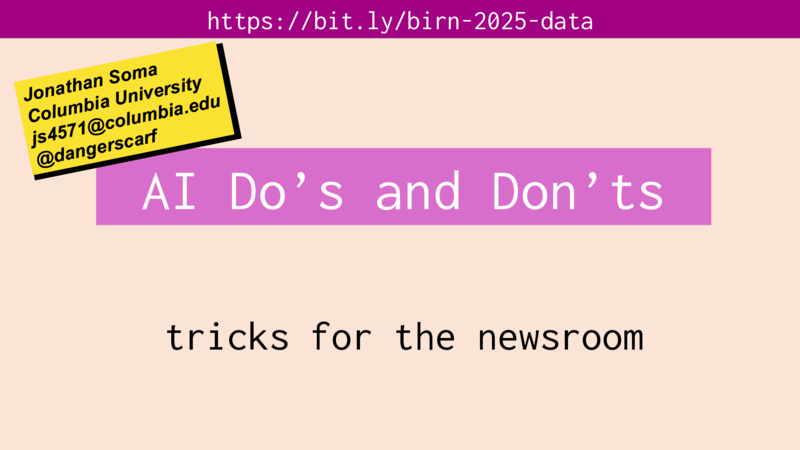

AI Do's and Don'ts
Download files:
📦 procurement-data.zip

📊 View Slides
📥 Download PDF
Useful Links
Pristina procurement contract award notices
- A big long list, in Albanian
NotebookLM
- The best possible conversation partner for large numbers of documents
Google Pinpoint
- The second-best partner for large numbers of documents
Pristina Procurement notices on NotebookLM
- Go here to search them!
MacWhisper
- My absolute favorite transcription tool (macOS only)
Finding a good Whisper app for Windows
- Sadly I don't actually know one
Claude for Sheets example spreadsheet
- Use AI in your spreadsheets
PDF to CSV converter
- I just asked Claude, "make me an app where i can drop in a bunch of PDFs and it will give me a CSV back that's all of the filenames + the text from each document"
ActivePieces
- Drag-and-drop workflow automation tool